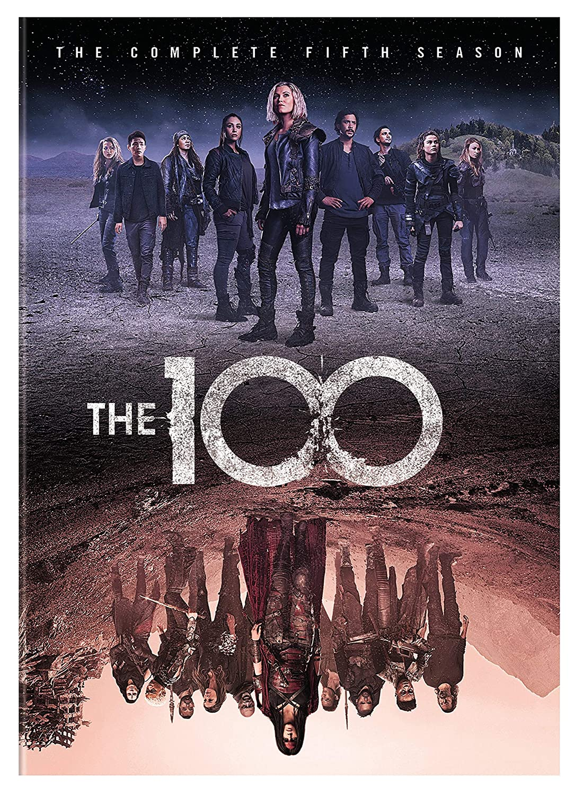
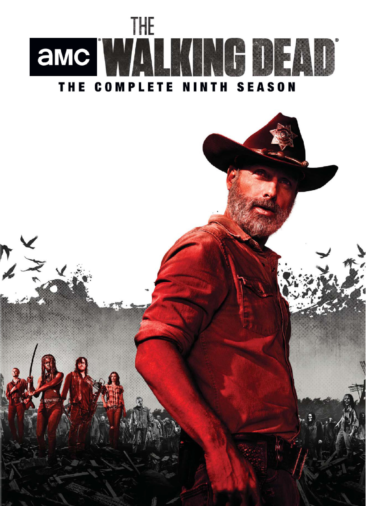
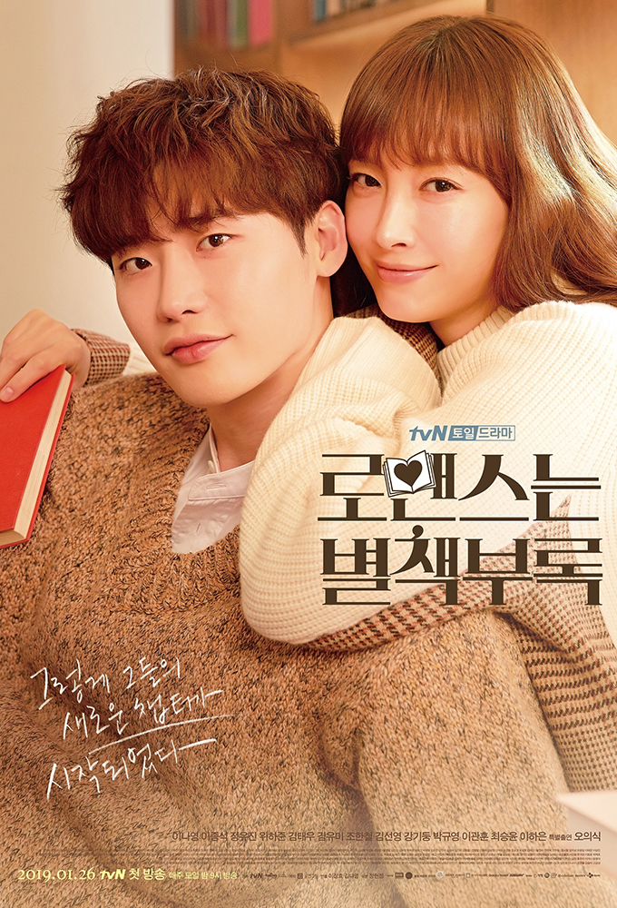
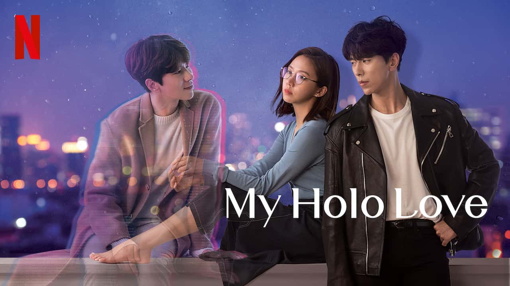
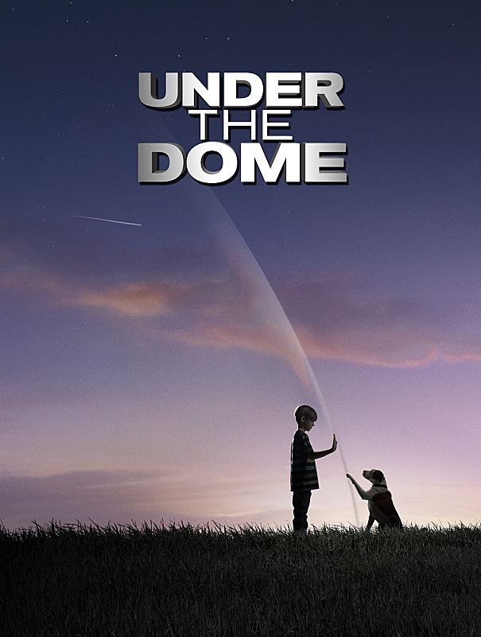
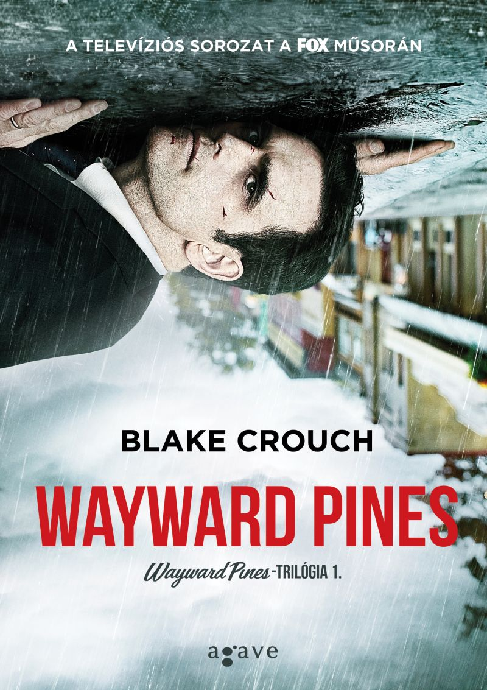
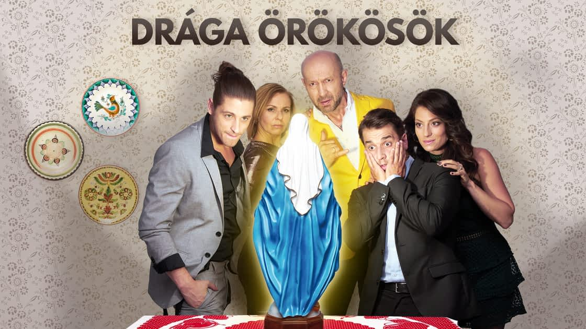
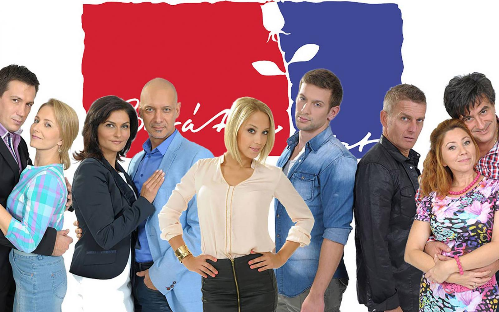
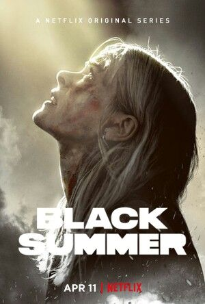

Kedvenc filmek, sorozatok és animék
2020 Top 10 filmek
Ezek voltak 2020 legjobb filmjei a Life.hu szerint.
2020 Top 10 sorozatok
Ezek voltak 2020 legjobb sorozatai a 24.hu szerint.
2020 Top 10 Anime
Ezek jelenleg a legjobb mangák a MyAnimeList.net szerint.
Az én Top 10 kedvenc filmem:
- The 100 
- The walking dead 
- Könyvbeillö szerelem 
- Szeretlek Hologram 
- Bura alatt 
- Wayward Pines 
- Fear the walking dead
- Drága örökösök 
- Barátok közt 
- Fekete Nyár 

2021